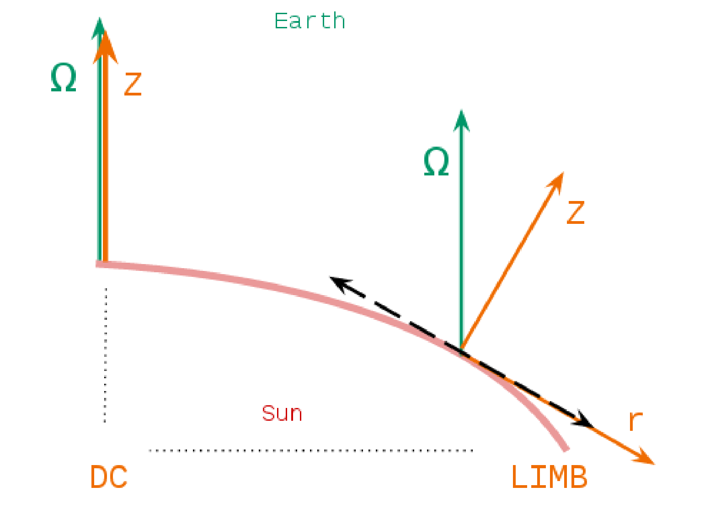
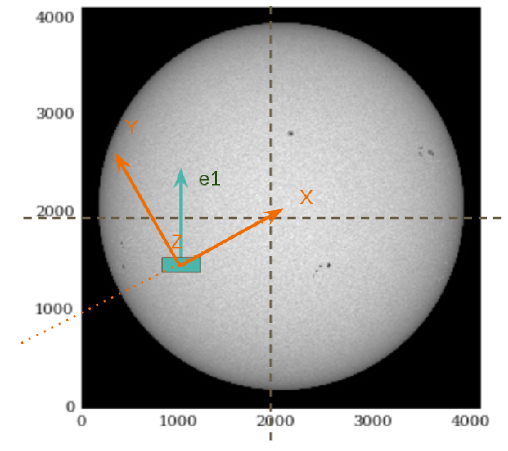
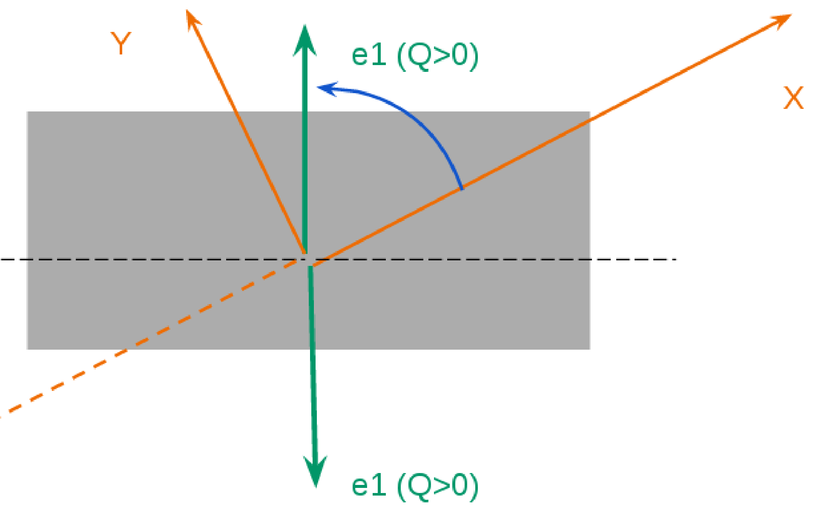
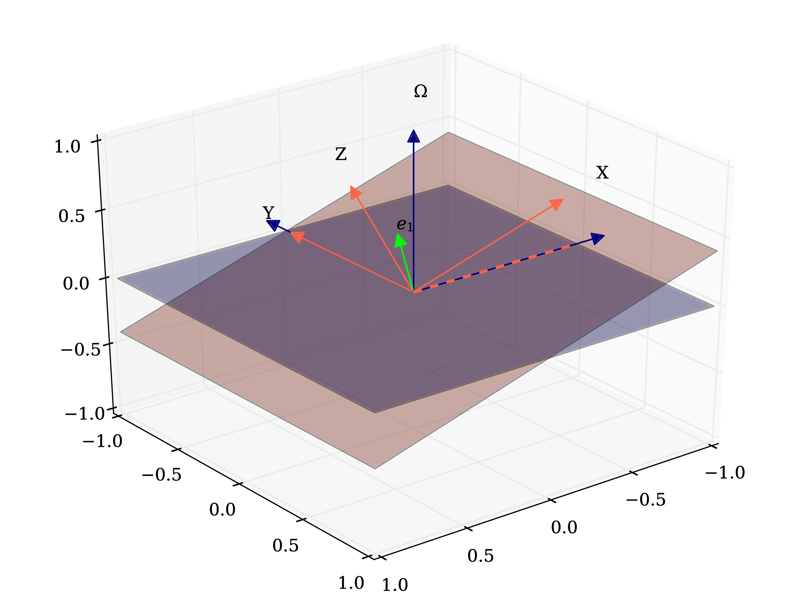
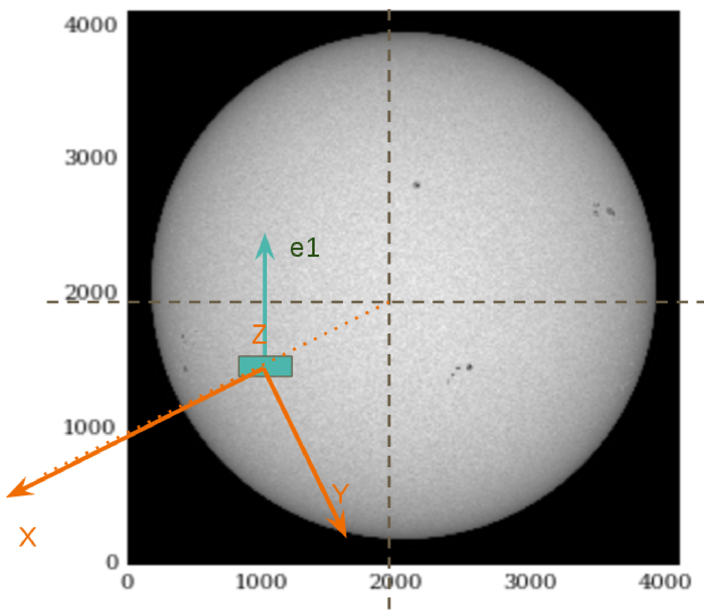
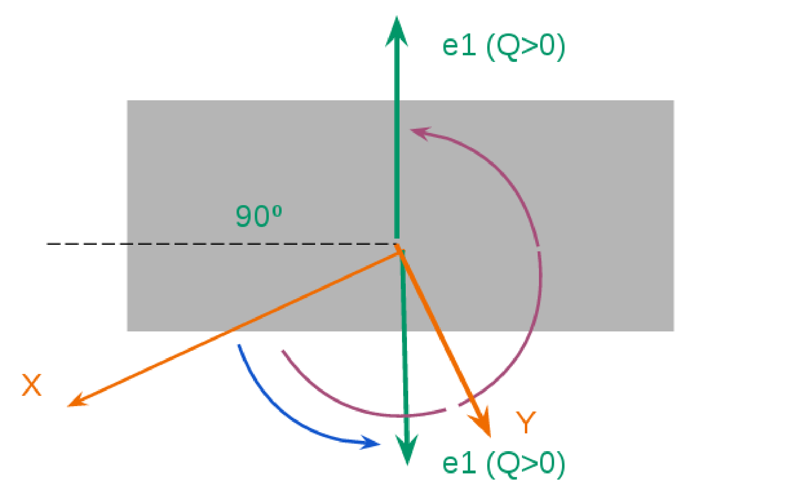
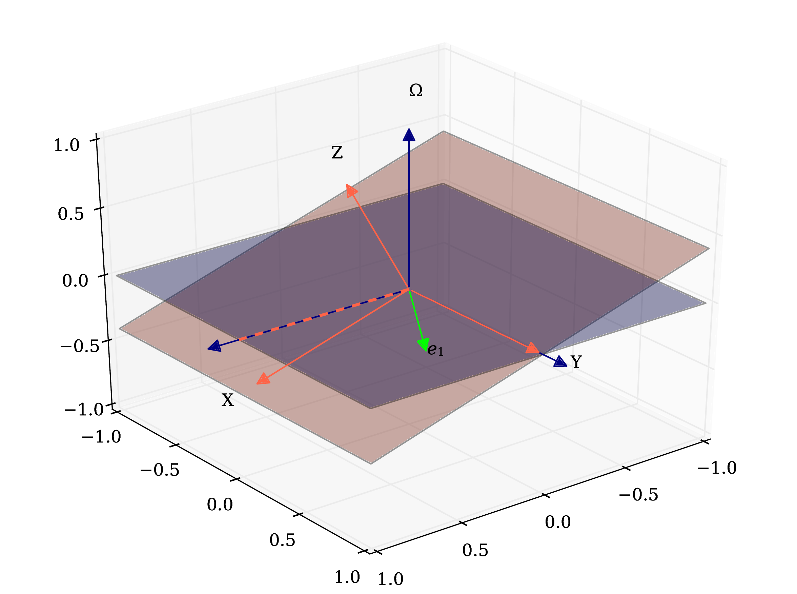

5.6. The reference system¶

Left) Hazel reference system, rigth) diagram indicating the position of the LOS vector. [fig:figure1]¶
As we can see in Fig. [fig:figure1], the angle \(\chi\) is measured from \(X\) to \(Y\), and \(\theta\) is measured from \(Z\) to \(\Omega\). We can choose the angle \(\chi\) in order to simplify the equations. If we choose \(\chi= 0\), then \(\Omega\) is between \(Z\) and \(X\). This configuration only happens when \(X\) is radial and points towards the disk center (DC). However, if we choose \(\chi= 180\), then \(\Omega\) is between \(Z\) and \(-X\). This configuration only happens when \(X\) is radial and points away from the disk center (DC). In the rigth panel we see where is \(\Omega\) if we choose the value of \(\chi\).
The consecuences of choosing one option are: the reference system itself and the equations to find all the posible solutions.
5.6.1. Example 1¶
We have the following data from our observation and we choose \(\chi=\)180d:
Position [arcsec]: \(x=-300.0\); \(y=-200.0\) & Q\(>\)0: N-S
We can calculate the angle from the equator:
alpha = np.arctan(y/x)*180./(np.pi) = 33.7d
Then we can calculate the heliocentric angle:
theta = np.arcsin(np.sqrt(x**2.+y**2.)/960.)*180/np.pi = 22.1d
Now we can calculate \(\gamma\) (must be measured from X to Y, anticlockwise). In Fig. [fig:example1] (right) you have two solutions: the purple and the blue one:
Gamma(purple) = 360-(90+33.7)=236.3d or Gamma(blue) =(90-33.7) = 56.3
Q\(>\)0 is a line, not a direction. Gamma is defined [0,180º] (look the Hazel GUI) so in principle you can choose the direction of Q\(>\)0 which makes Gamma inside the range. In order to check the result, you can execute the 3D plot to visualize the result (Fig. [fig:example1]).



Hazel reference system of the first example [fig:example1]
Then, the angles for this observation are:
theta_OBS = 22.1d
chi_OBS = 180.0d
Gamma_OBS =(90-33.7) = 56.3
5.6.2. Example 2¶
We have the same observation but we choose \(\chi=\)0d. Now, \(\gamma\) is again measured from \(X\), and it is the same as before (Fig. [fig:example2]).
Gamma(blue) =(90-33.7) = 56.3



Hazel reference system of the second example [fig:example2]
Then, the angles for this observation are:
theta_OBS = 22.1d
chi_OBS = 0.0d
Gamma_OBS =(90-33.7) = 56.3